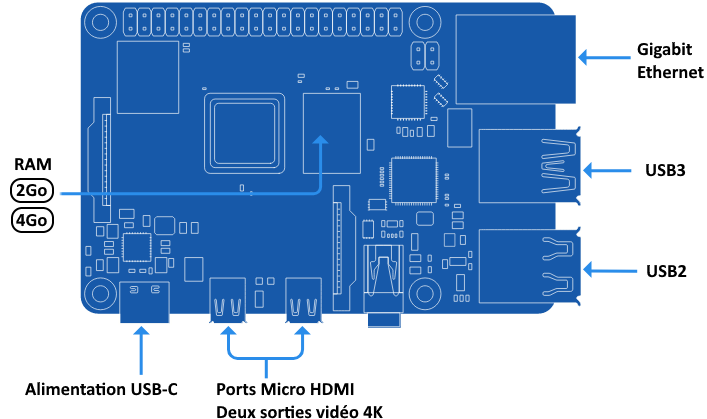

Description des entrées et sorties du Raspberry-Pi 4
Le Raspberry Pi dispose de plusieurs entrées et sorties qui permettent d'interagir avec divers périphériques. Les entrées incluent les ports GPIO (General Purpose Input/Output), qui permettent de connecter des capteurs, des boutons et d’autres composants. Il possède également des ports USB pour brancher des claviers, souris ou autres dispositifs. En ce qui concerne les sorties, le Raspberry Pi dispose de sorties vidéo comme le port HDMI, permettant de connecter un écran, et des sorties audio via le port jack ou HDMI. Les GPIO peuvent également servir de sorties pour contrôler des LEDs, des moteurs ou autres actuateurs
